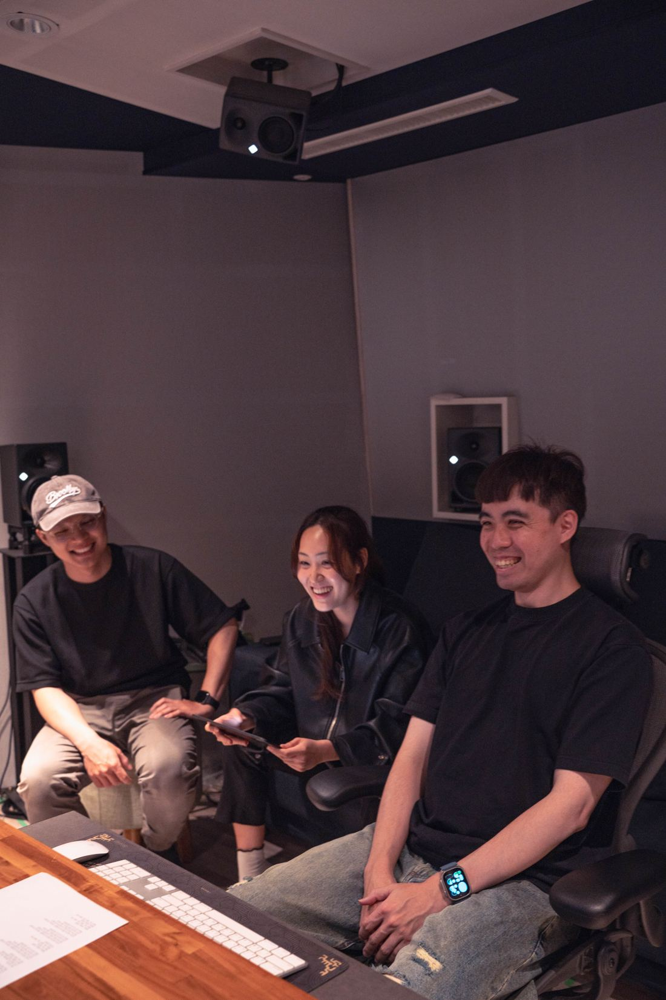
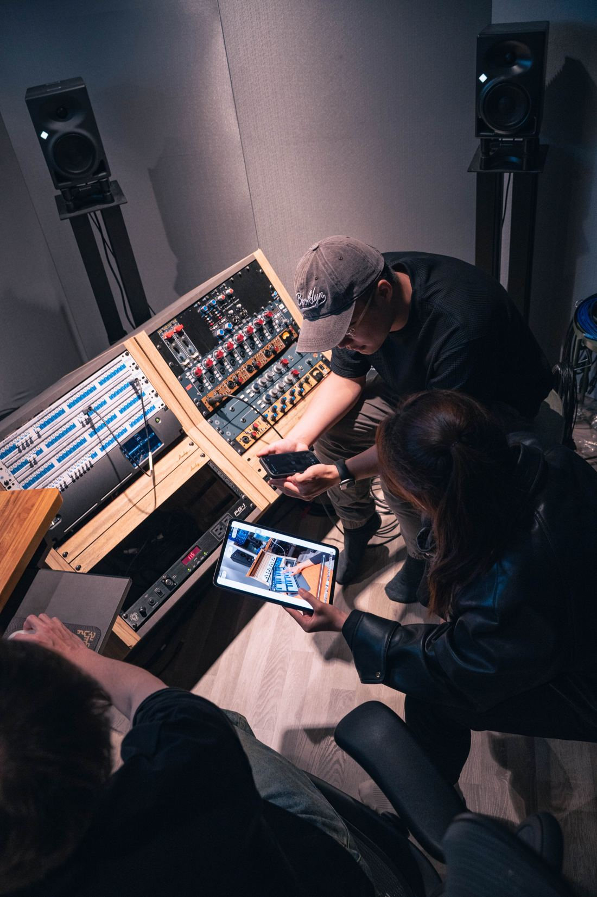
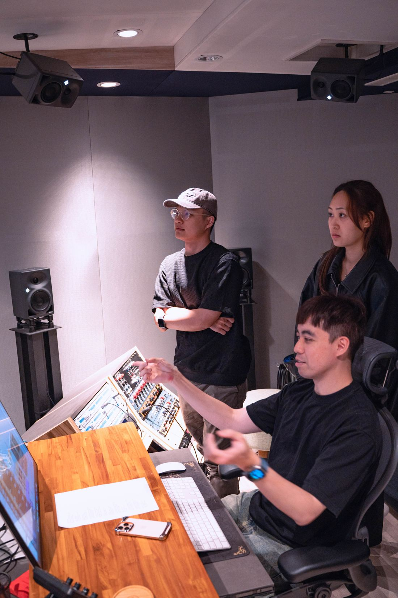
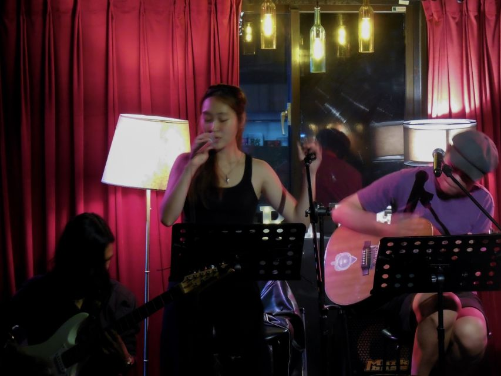
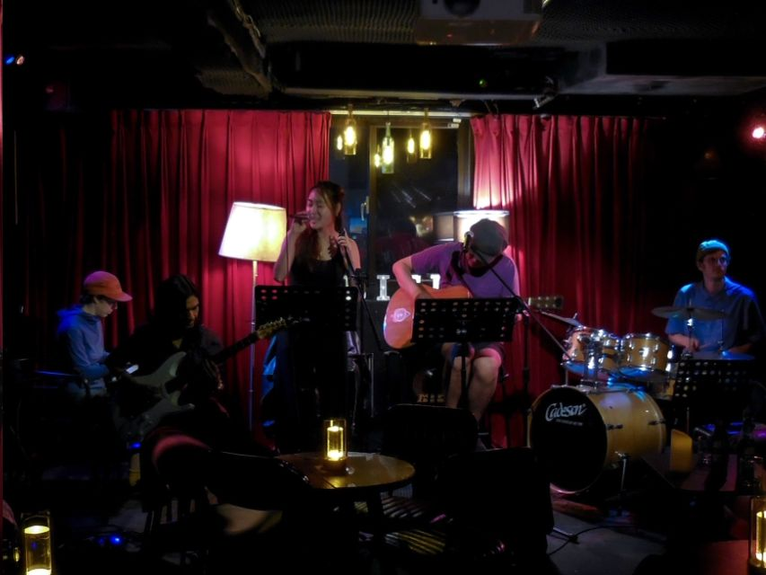
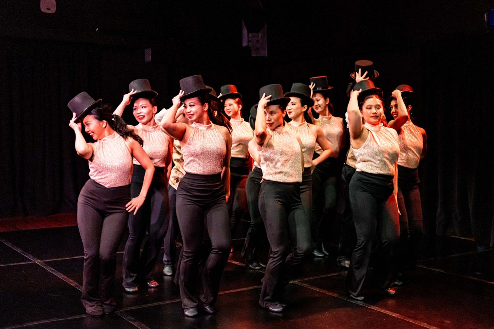
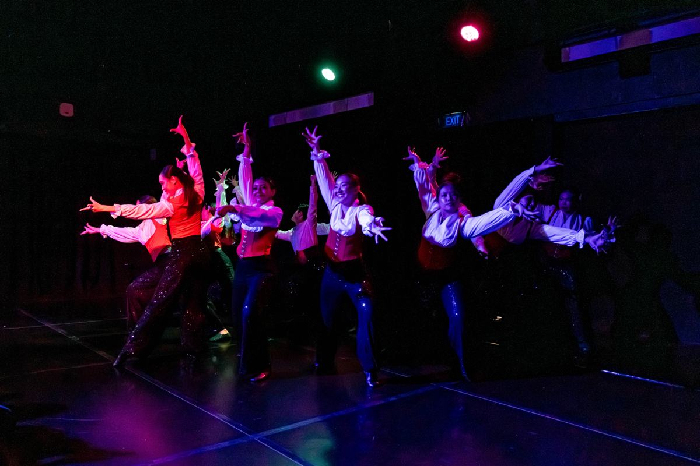
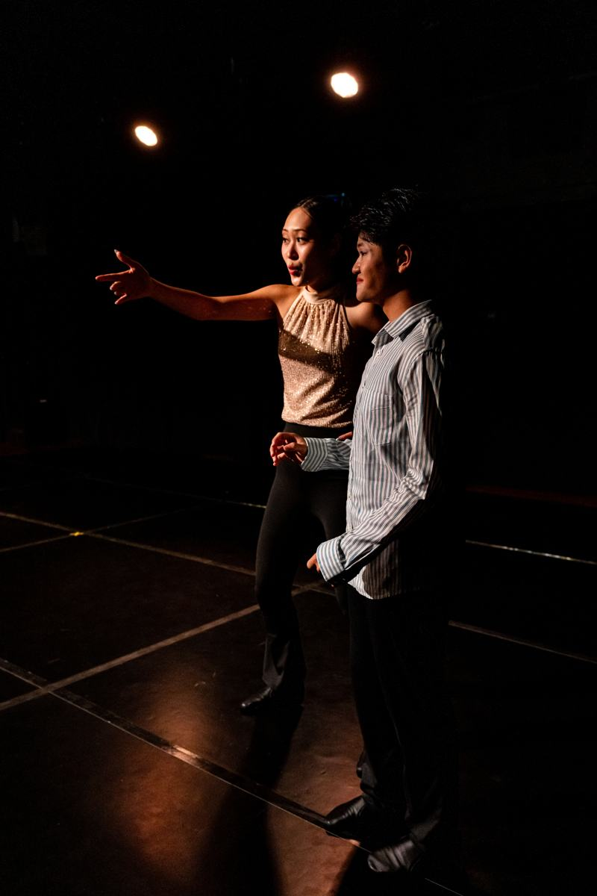
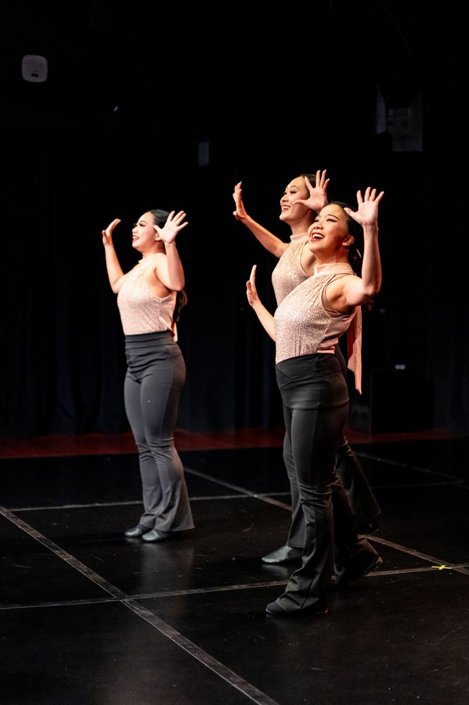
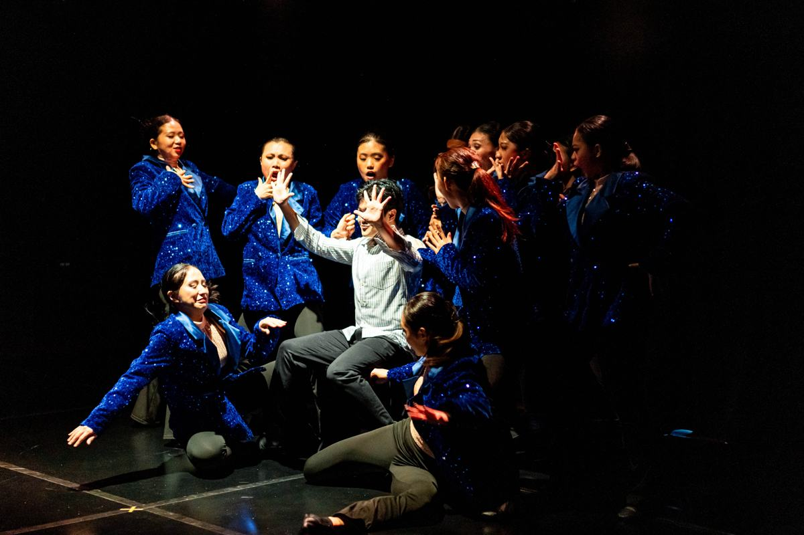

hi, i'm ayumi ♡
i'm a singaporean-japanese independent artist. i write and produce my own songs, blending r&b and pop with storytelling.
it usually starts with me on my voice memo & notes app. then on to my guitar or piano. voice memos i was too shy to play anyone. slowly they take structure.
justin bieber's grammy and coachella performances changed how i think about a set: stripped moments hit harder. i hope to bring my lived experiences, in my own way, magnified.
notepad to stage



three songs. three moods.
i don't have
pure pop! listenalive
my most raw piece of work yet. still a demo, and i want it to stay that honest on stage. listen to demotbc!
on stage
- people1 · ayumi
- vocalslead vocal
- instrumentacoustic guitar
- playbackbacking tracks for songs 1–2
- screenvisuals for songs 1–2, "how i wrote alive" video for song 3
recent gigs
i've danced for 12 years, so stages, lights and choreography already feel like home. this would be my very first time headlining a show with my own songs.







first of all, thank you for this opportunity. i stumbled on your post on wednesday night, 28 october, on a full moon night, and i thought this was meant for me. i can't wait to work with you to make the best show possible.
as an independent artist in singapore, i often feel lonely, because no one truly understands what it takes to be an artist. sometimes not even me. i've been honing my craft, my artistry, my sound. then there's the "visual" part, the stereotypes about what an artist should be, body image, imposter syndrome. opinions, noise, self-doubt. all the things a girl goes through, with a layer of art on top. it's given me so much respect for every artist doing this here.
"alive" is a song i've been working on. it's still a demo, but it's my most raw piece of work yet, and the song i can't wait to perform live. "dance tonight" and "i don't have" are pure pop, glittered. fully written and composed by me, produced with my friends in taiwan. it would be so special to bring them to life in singapore.
music is heard by the ears and felt through the soul. there's something about it that simply binds us. whether or not my music connects with you (i'd be over the moon if it does), thank you for doing what you do, and for paving the way for artists from singapore ♡
all my love,
ayumi